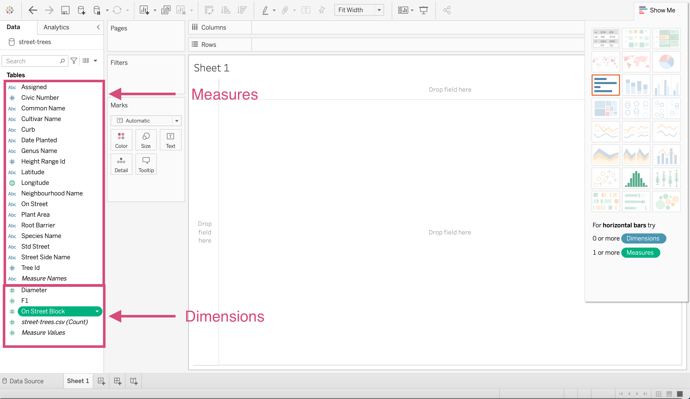

1. Introduction to Tableau¶
1.1. What is Tableau¶
By now, you’ll know that tableau is going to help you make sense of your data but how?
Tableau is a visualization software used in businesses to create static and dynamic plots that can easily be shared within and across organizations.
This software is used my many different occupations such as:
Business Analysts
Data Visualization Analysts
Data Scientists
Software developers
Engineers
to name a few.
Not only do many different occupations use it but companies ranging in size including giants like:
Amazon, Apple, CIBC, Coca-Cola, Lululemon, Lenovo, LinkedIn, Paypal, etc.

1.2. Tableau Examples¶
I guess it would be nice to know why right? Well Tableau makes some beautiful visualizations.
Here is a dashboard I made for the company “Fresh Prep” that you can explore on Tableau public.

This took around 5 weeks and note that you are seeing the dashboard using fake data.
This is just the tip of the iceburg though.
Let’s take a look at a few exceptionally beautiful examples.


1.2.3. Dinosaur2 by Rahul Patil¶


1.3. History of Tableau¶
Tableau was founded in 2003 in California (classic).
Recently in 2019, the company was acquired by Salesforce for $15.7 billion just giving a little reference about how valuable this tool is considered.
Normally this wouldn’t be too important but I do want you to know the expertise that this software is built by and why it is credible.
There are 3 main characters involved:

Chris Stolte who is the Co-founder and technical advisor
Phd is Computer Science (from Standford University)
Co-inventor on five software patents related to information visualization

Pat Hanrahan who is the Co-founder and Chief Scientist
Founding employee at Pixar Animation Studios
Received three Academy Awards for his work in rendering and computer graphics research
Professor of Computer Science and Electrical Engineering at Stanford University, teaching computer graphics

Christian Chabot, who is the Co-founder and chairman
MBA from Standford University
CEO and co-founder of BeeLine Software, a pioneer of next-generation digital mapping technology
The short story of this is that Tableau is built by some very talented individuals.
1.4. Other Similar Tools Available¶
Microsoft PowerBI (sold as part of a Microsoft package)
Looker (Owned by Google)
QlikView
Domo
many, many others…
1.5. Pros and Cons¶


1.7. Where is visualization situated in the grand scheme of data science?¶
Visualization can absolutely be an end-goal!
Visualization dashboards can used used to target individuals for sales, find short comings in production as well as help identify tends in the data which can help with a prediction component.
1.8. Getting Started¶
First let’s open up the application. I’ll be using the software installed on my computer.
You can also use Tableau public which is a free version of Tableau that allows you to use most of the software functions. The biggest downside is it does not let you save your work locally.
When you open this, you’ll be greated with the home screen. I have a few projects already on the go but you’ll have your own as well.
1.9. Connecting to Data¶
Tableau lets you either connect to a database server or upload a file. We are going to discuss one of each.

1.9.1. Connecting to MySQL Server¶
The most occuring database server and the example we are going to show you here is MySQL.
Clicking MySQL for the first time results in the following popup.

You’ll have to follow the instructions here and make sure you downloaded the 2 necessary packages in order for Tableau to connect.
Once you’ve installed them, you’ll have to close Tableau and reopen it.
Now when you click on MySQL, you will have the new popup where you’ll have to put the required information to your server.

Note that there are MANY other servers that are options. Simply click More… under the “To a Server” heading and take your pick!
1.10. csv, excel, etc.¶
In addition to Tableau connecting to a server, there are a multitude of files types Tableau can upload. The major types are CSVs, excel files, json files etc. to upload, we can simple use the More… under the “To a File” heading.

We are going to use a CSV named street-trees.csv for our demo.
Locate your file and click Open.

After you’ve selected you’ll be directed to a new screen where you’ll be asked to Update now or Automatically Update. I generally select the former.

This will now give you a view of the data that the csv has to offer.

This is where you’ll see some symbols on top of each column.
What are these?
1.11. Introduction to data types¶
Each column in your data will have a data type. This represents the kind of information that is stored in a column.
Tableau will designate a data type when you connect to a source.
The data types offered in Tableau are as follows: (source).
| Icon | Data type |
|---|---|
 | Text (string) values |
 | Date values |
 | Date & Time values |
 | Numerical values |
 | Boolean values (relational only) |
 | Geographic values (used with maps) |
 | Cluster Group (used with Find Clusters in Data(Link opens in a new window)) |
Note that generally speaking Tableau will guess which type goes with each column but you’ll soon find out that Tableau isn’t alway right. For example the column Date Planted should be changed to a “Date” data type and Longitude and Latitude should be both be Geographic data types.
The good news is this is easy to fix!
Let’s convert the column Date Planted first.
Simply click on the icon (ABC in this case) and select the desired type. We are changing this to a date.

To convert the columns Longitude and Latitude will take 2 steps instead.
We can’t convert it straight to a geographical location since Longitude or Latitude isn’t an option when the column is of type string.

So we need to change it to a “Number (decimal)” first!

Once the column is a number, we can then select the appropriate Longitude option under the Geographical Location menu.
Ta Da! Now we have the appropriate globe icon, meaning the column is now a Geographical data type.

We will have to repeat this for the Latitude column now.
1.12. Tableau buttons¶
Let’s stop playing with our data for a second and get into the actual visualization screen!
Clicking on Sheet 1 will take us to a worksheet where we can make our first plot.


{kind=link}
{kind=link}
{kind=link}
{kind=link}
{kind=link}
{kind=link}
{kind=link}
{kind=link}
1.13. Understanding Tableau¶
1.14. Dimensions vs Measures¶
You’ll also notice the columns from our data source are displayed on the side here in 2 categories.
{kind=link}
mandd
The blue icons above the line are called Dimensions and the green icons are called Measures.
Tableau describes Dimensions as “qualitative values (such as names, dates, or geographical data)” whereas Measures are numeric, quantitative values.
This is important to know since sometimes you’ll have to switch a column to be expressed as one or the other which it may not have automatically been defaulted to.
1.15. Continuous vs Discrete¶
Blue vs green.
1.15.1. Worksheets vs dashboards vs story¶
1.15.2. Drill down, Hierarchies and Sorting¶
1.16. Quick viz examples and effectiveness¶
Bar
Bubble
Fast Map
1.17. Distributing and saving¶
Workbook
tbx